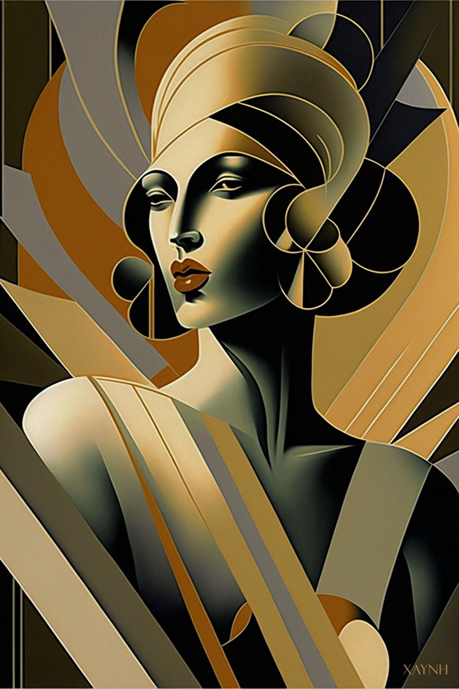
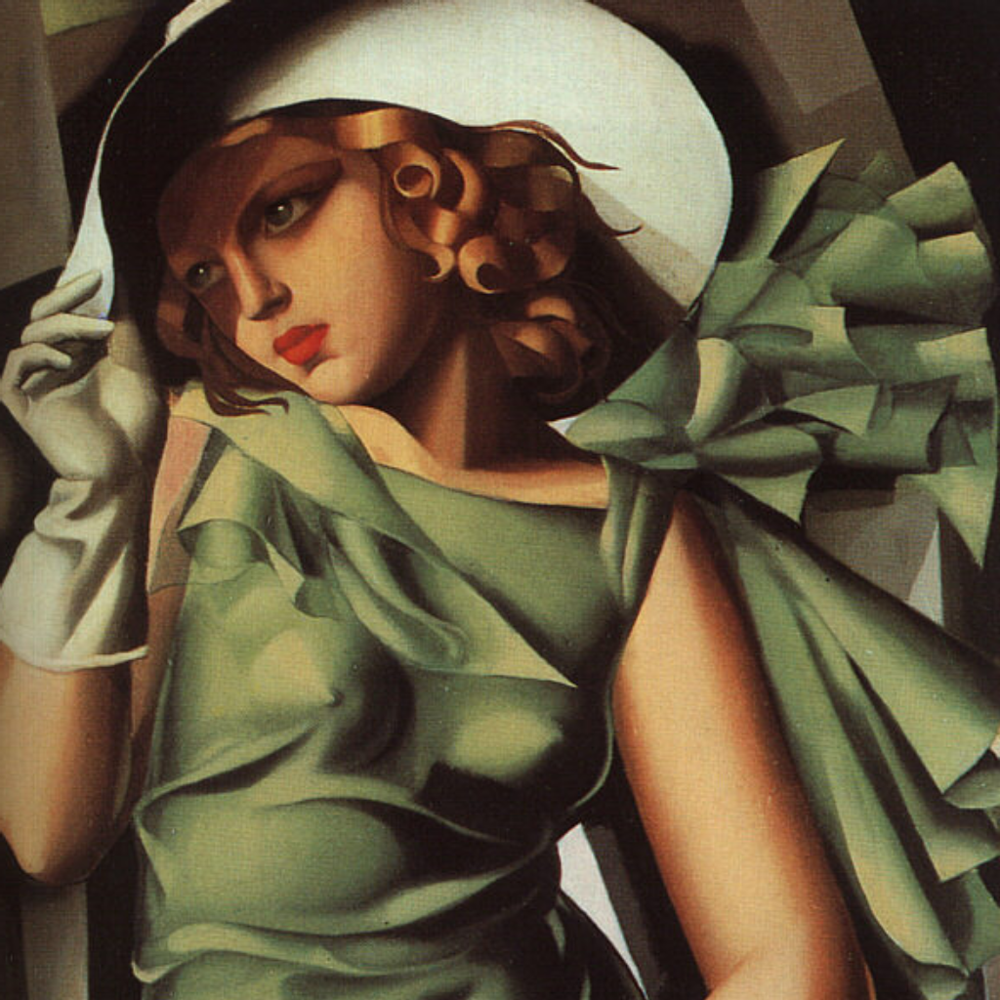
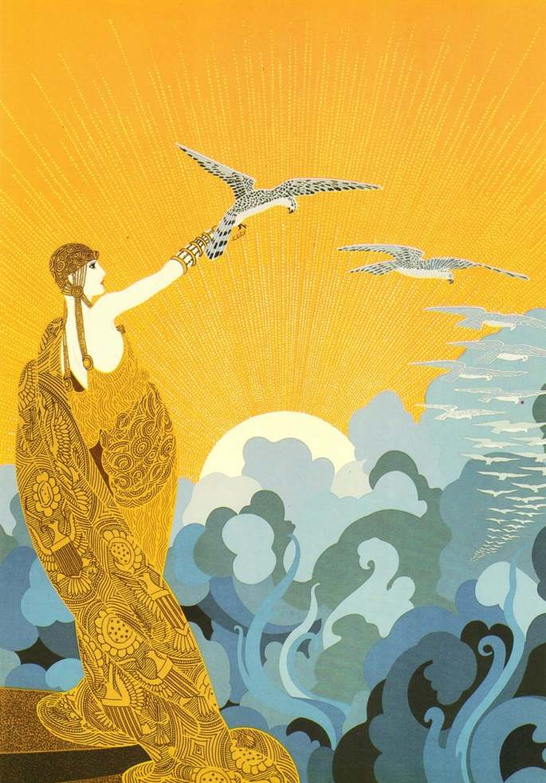

 "El art déco inició su apogeo en los años 1920. Aunque muchos movimientos del diseño tienen raíces o intenciones políticas o filosóficas, el art déco era casi puramente decorativo, por lo que se considera un estilo burgués. A pesar del eclecticismo de sus influencias formales y estilísticas, el art déco es sólido y posee una clara identidad propia. No se trata de un historicismo ni de un anacronismo; es fiel a su época y deja entrever la noción futurista de la Revolución industrial. Su simbolismo gira en torno al progreso, el ordenamiento, la ciudad y lo urbano, la maquinaria. Elegante, funcional y modernista, el art déco fue un avance frente al art nouveau, esta vez exitoso en la generación de un nuevo repertorio de formas acordes con la problemática e imaginería de su tiempo.
El art déco era un estilo muy opulento, y su exageración se atribuye a una reacción contra la austeridad forzada producto de la Primera Guerra Mundial. De manera simultánea a una creciente depresión económica y al fantasma del acercamiento de una Segunda Guerra Mundial, había un deseo intenso por el escapismo. La gente gozó de los placeres de la vida y del art déco durante la era del jazz.